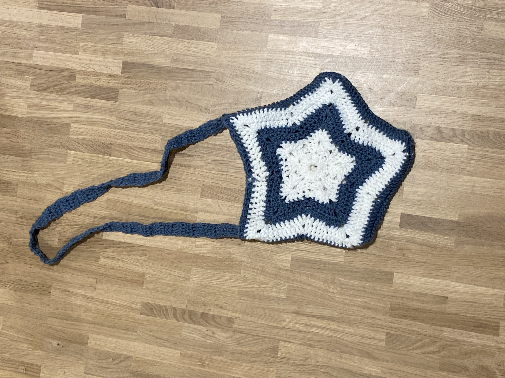

Eindproduct
Hieronder zie je een foto hoe je outfit er uiteindelijk uit gaat zien. Wanneer je de outfit hebt gemaakt kan je hier zien hoeveel het op elkaar lijkt.
Outfit 1e versie
Hieronder zie je een foto van hoe de outfit er eerst uitzag. Dit duurde ongeveer een paar dagen om te haken.

Beenwarmers
Hieronder zie je een foto van hoe de beenwarmers er uiteindelijk uitzien. Dit duurde ongeveer vier uurtjes om te haken.
Tas
Hieronder zie je een foto van hoe de tas eruit gaat zien, wanneer je klaar bent met het haken. Dit duurde ongeveer drie uur om te haken.
Off the shoulder trui
Hieronder zie je een foto van hoe de off the shoulder trui eruit ziet, nadat klaar bent met de trui haken. Dit duurde ongeveer 29 uur om te haken.
Puffer rok
Hieronder zie je hoe de puffer rok er uiteindlijk uitziet, wanneer je helemaal klaar bent. Dit duurde ongeveer een hele dag om te haken.
Bonus sjaal
Hieronder zie je een foto van de sjaal. Dit is een bonus deel van de outfit, want dit werd gebreid en niet gehaakt. Dus als je kan breien kan je dit makkelijk zelf breien en het duurde ongeveer een uurtje om te breien.

Outfit eindversie
Hieronder zie je de foto van de outfit, nadat alle delen van de outfit gehaakt zijn. Dus het duurde ongeveer twee en een halve dag om de hele outfit te haken.